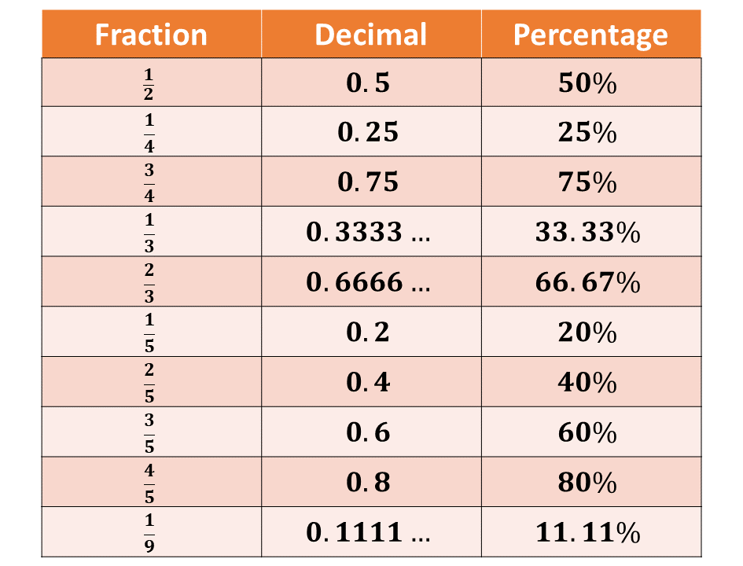
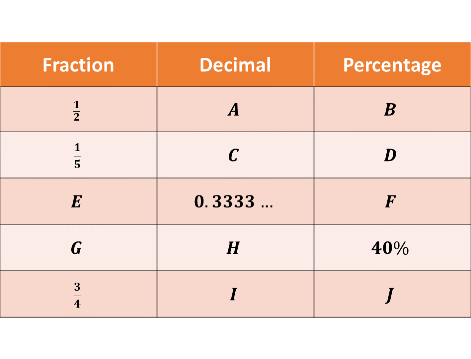

In this lesson, we will learn about multiplication and division facts, how to convert given benchmark fractions to decimals, percentages and vice versa and also, how to multiply and divide decimals by powers of 10 such as 10, 100, 1000, \(\frac{1}{1000}\), etc.
This was a topic treated in basics 7 and 8, so if you understand the concepts, have a quick glass through the lesson and solve the accompanying questions to strengthen your understanding of the concepts.
Multiplication and division are essential skills in mathematics. Knowing the multiplication facts up to 144 helps in solving more complex problems quickly. We normally refer to these facts in our recitation of the "Times table."
Since subtraction is the reverse of addition, we can also say that, division is the reverse of multiplication and can be used to find how many times one number is contained in another.
Here are the multiplication facts from \((1 \times 1)\) to \((12 \times 12)\). Remember, that to be quick at solving mathematical questions, you need to recall these facts.
You can also develop it further to include larger numbers.

Division is the inverse of multiplication, that is, it is the reverse or the opposite of multiplication.
Hence, if \(a \times b = c\), it implies that
1. \(c \div a = b \ \) and
2. \(c \div b = a\)
Consider the examples below:
Example 1
If \(6 \times 4 = 24\), find
\((i)\) \(24 ÷ 6\)
\((ii)\) \(24 ÷ 4\)
Solution
\(6 \times 4 = 24\)
Division is the opposite of multiplication. It implies that,
\((i)\) \(24 ÷ 6 = 4\)
\((ii)\) \(24 ÷ 4 = 6\)
Example 2
Use the multiplication fact \(8 \times 7 = 56\) to find;
\((i)\) \(56 \div 8\)
\((ii)\) \(56 \div 7\)
Solution
Example 3
Use the multiplication fact \(9 \times 12 = 108\) to find;
\((i)\) \(108 \div 9\)
\((ii)\) \(108 \div 12\)
Solution
Example 4
Complete the following based on the multiplication facts:
\((i)\) \(7 \times \_\_\_ = 42\)
\((ii)\) \(\_\_\_ \times 9 = 81\)
\((iii)\) \(11 \times \_\_\_ = 121\)
Solution
Example 5
Use division to solve these:
\((i)\) \(72 \div \_\_\_ = 8\)
\((ii)\) \(144 \div 12 = \_\_\_\)
\((iii)\) \(\_\_\_ \div 6 = 11\)
Solution
Solve the following.
-
A baker arranges 12 cupcakes in each tray. If there are 96 cupcakes, how many trays does the baker need?
-
There are 72 apples distributed equally among 9 baskets. How many apples are in each basket?
-
Write all multiplication facts from \(1 \times 1\) to \(12 \times 12\) in your notebook.
-
For each multiplication fact, write the related division facts.
-
Solve these problems
\((i)\) \(144 \div 12 = \_\_\_\)
\((ii)\) \(132 \div 11 = \_\_\_\)
\((iii)\) \(108 \div 9 = \_\_\_\)
Test yourself on what you have learnt so far. Click on the link below when you are ready.
Kindly contact the administrator on 0208711375 for the link to the test.
In your studies in Mathematics, you will come across many fractions. In this lesson, we will look at some of the common fractions you are likely to encounter in Mathematics, and learn their equivalence in percentages and decimals.
A benchmark fraction is a common fraction that is usually used as a reference point. Examples include \(\frac{1}{2}, \frac{1}{4}, \frac{1}{3}\) and \(\frac{3}{4}\). These fractions can be represented as decimals or percentages.
They are mostly found on tickets, reciepts, invoices etc.
Some of the common conversions are included in the table below:

1. Converting Fractions to Decimals:
Divide the numerator (top number) by the denominator (bottom number).
Example: \(\frac{3}{4} = 3 \div 4 = 0.75\)
Note:
You can use the long division to convert fractions to decimals.
2. Converting Decimals to Percentages:
Multiply the decimal by 100 and add the percentage symbol (%).
Example: \(0.75 \times 100 = 75\%\)
3. Converting Percentages to Fractions:
Write the percentage as a fraction with a denominator of 100, then simplify.
Example: \(75\% = \frac{75}{100} = \frac{3}{4}\)
To learn more about converting between fractions, decimals and percentages, click here.
Example 1
Complete the following conversions:
Solution
Solve the following:
-
If you eat \(\frac{1}{4}\) of a pizza, what percentage of the pizza have you eaten?
-
A survey shows that \(20\%\) of students prefer reading as a hobby. Express this percentage as a fraction and a decimal.
-
Write the decimal and percentage equivalents for the following fractions:
-
Convert the following percentages to fractions and decimals:
-
Convert the following decimals to fractions and percentages:
\((i) \frac{1}{5}\)
\((ii) \frac{3}{5}\)
\((iii) \frac{1}{6}\)
\((i) \ \ 25\%\)
\((ii) \ \ 66.67\%\)
\((iii) \ \ 80\%\)
\((i) \ \ 0.2\)
\((ii) \ \ 0.75\)
\((iii) \ \ 0.3333\dots\)
Test yourself on what you have learnt so far. Click on the link below when you are ready.
Kindly contact the administrator on 0208711375 for the link to the test.
Sometimes we will be required to multiply or divide given decimals by powers of 10, such as 10, 100, 1000, \(\frac{1}{100}\), etc.
In this lesson, we will learn how to multiply and divide various decimals by powers of 10.
Multiplying or dividing by powers of \(10\) is about shifting the decimal point to the right (if it is multiplication) or to the left (when dividing).
When multiplying decimals by powers of 10, the decimal point moves an amount of steps to the right, depending on the number of zeros (0) present in the power of 10.
That is, when you multiply a decimal number by 10, the decimal point moves one place to the right. When you multiply by 100, the decimal point moves two places to the right, and when you multiply by 1000, the decimal point moves three places to the right.
Let's take it one at a time.
MULTIPLYING BY 10
When multiplying a decimal number by 10, move the decimal point one place to the right.
This is because there is only 1 zero (0) present in the number 10
Consider the examples below:
Example 1
Multiply 3.45 by 10
Solution
Example 2
Multiply 105.25 by 10
Solution
Example 3
Multiply 0.67 by 10
Solution
MULTIPLYING BY 100
When multiplying a decimal number by 100, move the decimal point two places to the right.
This is because there are 2 zeros (00) present in the number 100
Consider the examples below:
Example 4
Multiply 3.45 by 100
Solution
Example 5
Multiply 105.25 by 100
Solution
Example 6
Multiply 0.67 by 100
Solution
MULTIPLYING BY 1000
When multiplying a decimal number by 1000, move the decimal point three places to the right.
This is because there are 3 zeros (000) present in the number 1000
Consider the examples below:
Example 7
Multiply 3.45 by 1000
Solution
Example 8
Multiply 105.25 by 1000
Solution
Example 9
Multiply 0.67 by 1000
Solution
Solve the following:
-
Multiply 4.56 by 10.
-
Multiply 0.032 by 100.
-
Multiply 12.7 by 1000.
-
Multiply 0.0045 by 10.
-
Multiply 56.78 by 100.
-
Multiply 7.001 by 1000.
-
Multiply 0.89 by \(10^3\).
-
Multiply 0.0078 by \(10^2\).
-
Multiply 123.4 by 10.
-
Multiply 0.056 by \(10^4\).
When dividing decimals by powers of 10, the decimal point moves a number of places to the left, depending on the number of zeros (0) present in the power of 10.
That is, when you divide a decimal number by 10, the decimal point moves one place to the left. When you divide by 100, the decimal point moves two places to the left, and when you divide by 1000, the decimal point moves three places to the left.
Let's take it one at a time.
DIVIDING BY 10
Dividing a decimal by 10, is the same as multiplying it by \(\frac{1}{10}\). That is,
\[\frac{a}{10} = a \times \frac{1}{10}\]
When dividing a decimal number by 10, move the decimal point one place to the left. This is because there is only 1 zero (0) present in the number 10.
Consider the examples below:
Example 10
Divide 3.45 by 10
Solution
Example 11
Divide 105.25 by 10
Solution
Example 12
Divide 0.67 by 10
Solution
DIVIDING BY 100
Dividing a decimal by 100, is the same as multiplying it by \(\frac{1}{100}\). That is,
\[\frac{a}{100} = a \times \frac{1}{100}\]
When dividing a decimal number by 100, move the decimal point two places to the left. This is because there are 2 zeros (00) present in the number 100.
Consider the examples below:
Example 13
Divide 3.45 by 100
Solution
Example 14
Divide 105.25 by 100
Solution
Example 15
Divide 0.67 by 100
Solution
DIVIDING BY 1000
Dividing a decimal by 1000, is the same as multiplying it by \(\frac{1}{1000}\). That is,
\[\frac{a}{1000} = a \times \frac{1}{1000}\]
When dividing a decimal number by 1000, move the decimal point three places to the left. This is because there are 3 zeros (000) present in the number 1000.
Consider the examples below:
Example 16
Divide 3.45 by 1000
Solution
Example 17
Divide 105.25 by 1000
Solution
Example 18
Divide 0.67 by 1000
Solution
Solve the following:
-
Divide 45.6 by 10.
-
Divide 789.0 by 100.
-
Divide 0.345 by 1000.
-
Divide 12.34 by 10.
-
Divide 67.89 by 100.
-
Divide 0.5678 by \(10^3\).
-
Divide 456 by \(10^2\).
-
Divide 3.210 by 1000.
-
Divide 890.12 by 10.
-
Divide 0.0005 by \(10^4\).
\(* \ \) When multiplying by powers of 10:
Move the decimal point to the right, depending on the number of zeros present in the power of 10.
\(* \ \) When dividing by powers of 10:
Move the decimal point to the left, depending on the number of zeros present in the power of 10.
\(* \ \) Number of zeros:
The number of zeros in the power of 10 determines how many places you will move the decimal point to the left or right.
\(* \ \) Special Case:
If there are not enough digits to move the decimal point, add zeros as needed.
Example 19
Multiply 0.67 by 100000
Solution
Example 20
Divide 0.067 by 10000
Solution
Solve the following:
-
Multiply 5.67 by 100.
-
Divide 123.45 by 1000.
-
A water tank holds 567.89 liters. What is the capacity of one tank in deciliters?
-
Divide 789.0 by 10.
-
Multiply 0.032 by 1000.
-
Divide 12.34 by 100.
-
Multiply 1.23 by \(10^3\).
-
Divide 45.6 by \(10^2\).
-
A factory produces 0.05 kilograms of material in one batch. How many kilograms will 1000 batches produce?
-
If the price of an item is Gh₵ 12.34, what is the price of 10 such items?
Test yourself on what you have learnt so far. Click on the link below when you are ready.
Kindly contact the administrator on 0208711375 for the link to the test.
To advertise on our website kindly call on 0208711375 or 0249969740.